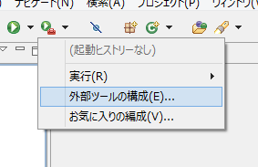

Eclipse 上で実行した Ant から日本語がコンソール出力されない場合は
今まで Eclipse の GUI 上から「プロジェクト設定に従い WAR ファイルを作成する」を選択して WAR を作っていて、ンー気持ち悪いな！と思い、でも新たなツールも導入できない劣悪な環境なので、その場に転がっていた Ant を使うことにした。
Ant は Java のビルドツール。build.xml という XML ファイルに、コンパイルしろやらファイルをコピーしろやら WAR ファイルを作れやら処理を書いてあげれば、以降はその設定ファイルを使って自動でビルドできる、というモノ。今は Maven というもっと便利なツールがあって、ビルド以外のこともできるし、ビルドもサクッとできちゃう便利ヤーツ。残念ながら Ant しかないので Ant を頑張って書く！Ant のインストール等は今回は触れない。
さて、この Ant を Eclipse 上から Alt + Shift + X → Q で実行すると、コンソールに結果が表示されるのだが、echo 要素で書いた日本語のメッセージが出力されない。
サンプルソースは以下 (build.xml)。
<?xml version="1.0" encoding="UTF-8"?>
<project name="testProject" default="all" basedir=".">
<target name="all">
<echo message="日本語で Echo を出力"/>
</target>
</project>
この「日本語で Echo を出力」というメッセージがコンソールに全く出てこない。
調べてみると、ちょうど答えがあった。
解決策としては、「外部ツールの構成」⇒「JRE」で「ランタイムJRE」を「ワークスペースと同じJREで実行」を選択する。
「外部ツールの構成」というのは、右向きの三角「▲」マーク (ビデオの再生マークみたいな) ヤツの右下に茶色いカバンが書いてあるアイコンのメニューから選べる。
↓コレ。(「Android NDKを使った開発環境の構築 - Yahoo!知恵袋」より画像を拝借しました)

これで OK。コンソールが日本語表示になった上に、日本語の Echo メッセージも正しく出力された。